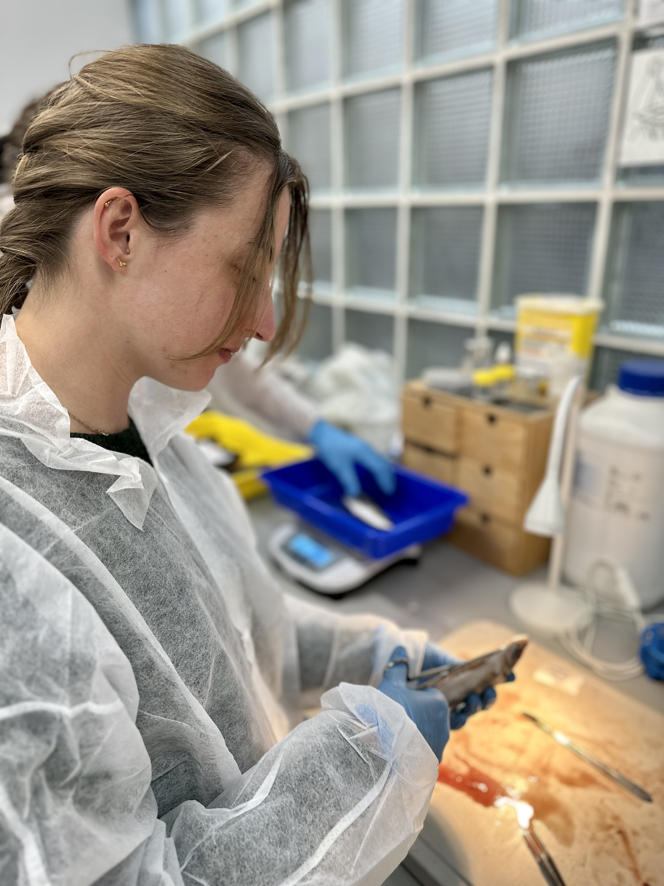
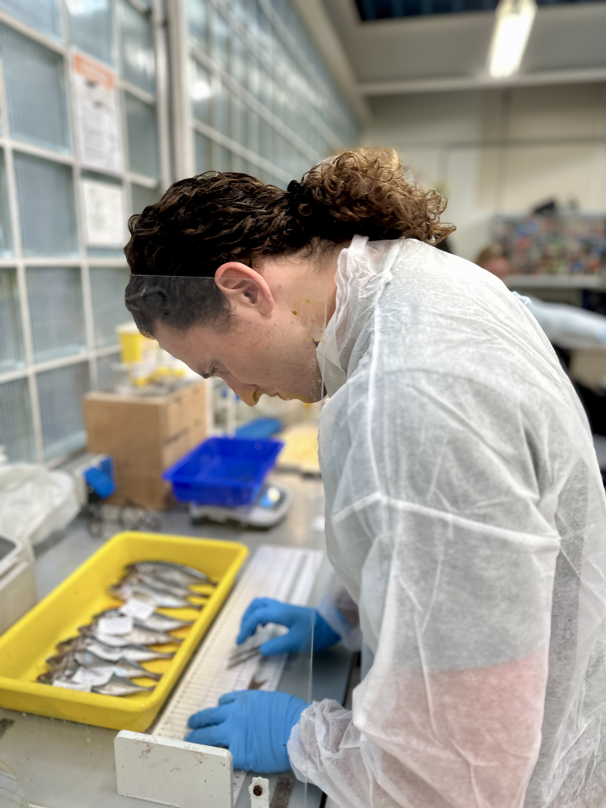
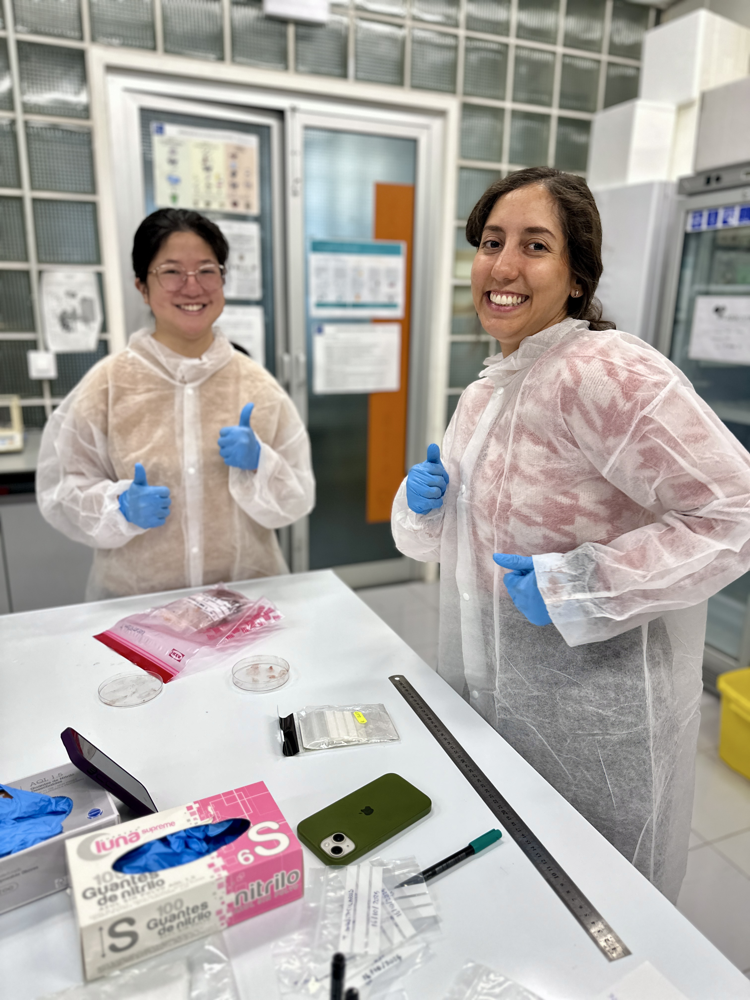
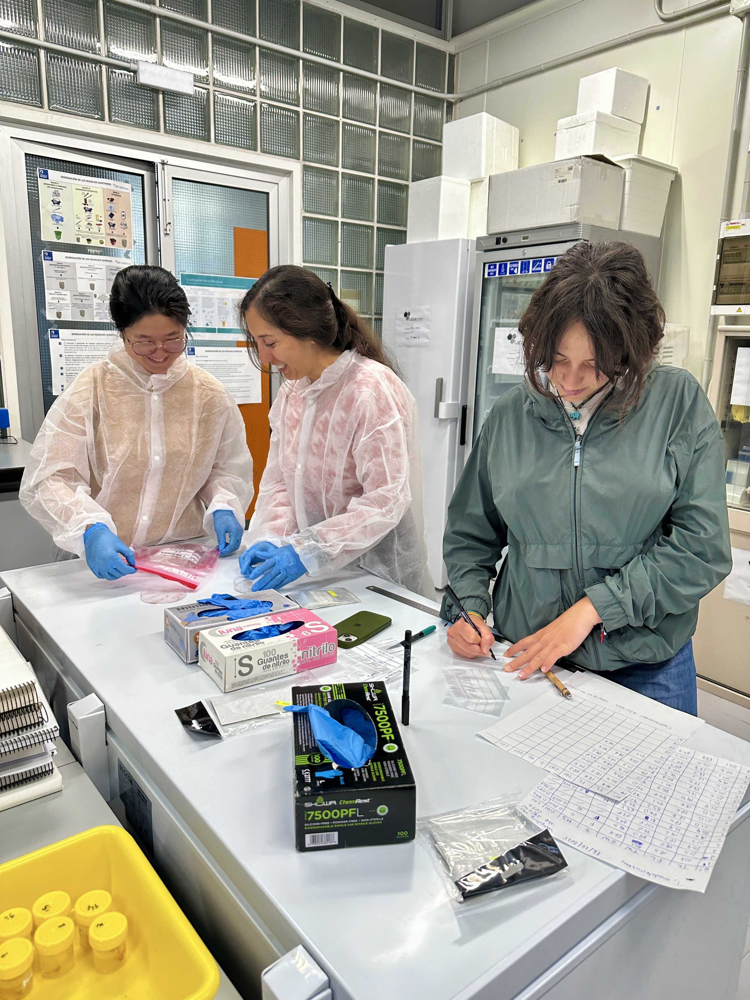
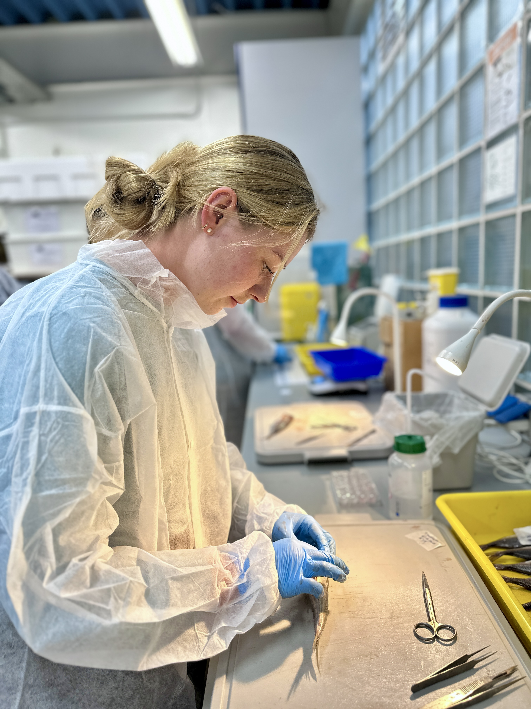

Laboratory Sampling of Trachurus mediterraneus
On 29 April 2026, students from the Erasmus Mundus Joint Master in Islands and Sustainability participated in a laboratory sampling session using Trachurus mediterraneus, within the courses Biological, Population and Fish Parameters (51303) and Ecological Modelling and Conservation Strategies (51302). The activity allowed students to practise key biological sampling procedures and collect data commonly used in fisheries science, linking theoretical concepts with hands-on laboratory experience. It was also a lively and collaborative session, showing that careful scientific sampling can be both rigorous and enjoyable.
View photo gallery



